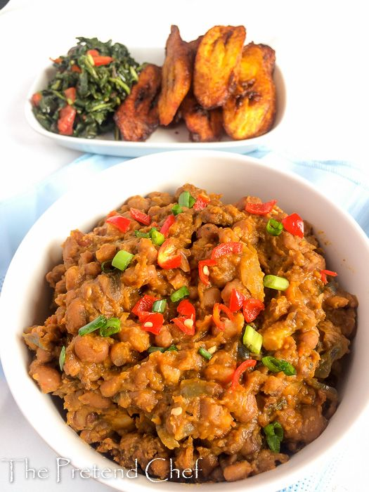

Beans
Home

Description
Nigerian Stewed Beans is a luscious, savory dish of red or brown beans slowly cooked in a fragrant, slightly sweet pepper-and-tomato sauce. Enriched with palm oil, onions, and traditional spices, the beans become luxuriously tender and flavorful.It is a beloved Yoruba specialty, often enjoyed with garri, fried plantains, or fresh bread .
Ingredients
- 2 cups dried brown beans (or black-eyed peas), soaked overnight
- ¼ cup palm oil
- 1 large onion, chopped
- 3–4 Roma tomatoes, blended with 2 bell peppers and 1–2 Scotch bonnets
- 1 tablespoon ground crayfish
- 2 bouillon cubes
- 1 smoked turkey leg or smoked fish, optional
- Salt, to taste
- Water, as needed
Instructions
- Cook beans: Drain soaked beans. In a pot, cover beans with fresh water, add bouillon cubes, and simmer until just tender (about 45–60 minutes).
- Prepare stew: In another pot, heat palm oil. Sauté onions until translucent, add blended pepper-tomato mix, and cook 8–10 minutes until oil separates.
- Combine and season: Add drained beans and smoked protein (if using) to the stew. Stir in crayfish and salt, then add a splash of bean cooking liquid to reach desired consistency.
- Simmer: Reduce heat, cover, and cook 10–15 more minutes, stirring occasionally, until flavors meld and sauce thickens.